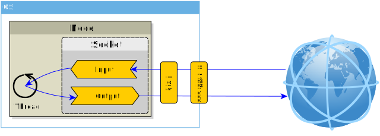
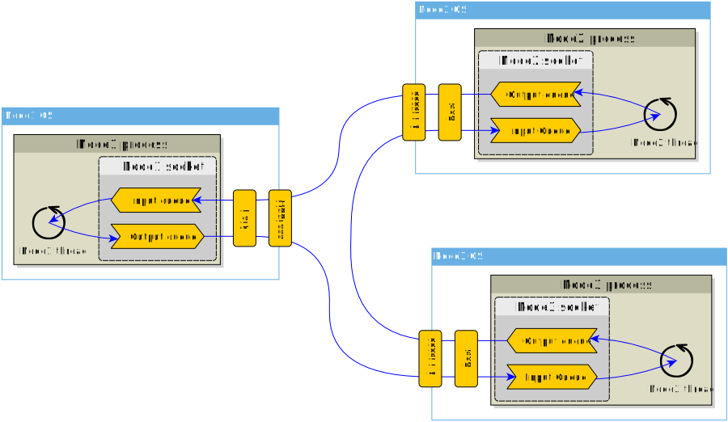
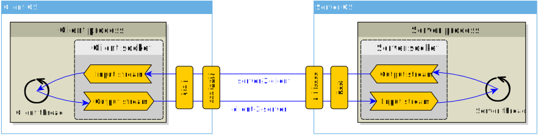

Communication Mechanisms for Distributed Systems
Distributes Systems — Module 2
A.Y. 2024/2025
Giovanni Ciatto
Compiled on: 2024-11-20 — printable version
Context
-
Distributes systems requires distributed nodes to communicate over the network
-
So far, we described communication as “sending messages” between nodes…
-
… but how exactly do we send and receive messages?
-
Okay, we know from our networking course that network protocols are the answer…
-
But how do we use these protocols in our programs, in practice?
Sockets
-
Most OS support the Berkeley sockets API…
-
… and virtually all programming languages provide a wrapper around this API
- there including Python, via the
socketmodule
- there including Python, via the
-
Sockets are:
- an ancient, and stable API for low-level networking in TCP/UDP (and more)
- very didactic: they support very common communication mechanism, which you may find in many other technologies too
- e.g. connection-less vs. connection-oriented communication
- e.g. message-based vs. stream-based communication
- very elementary: higher-level communication abstractions can be built on top of them
- e.g. RPC, HTTP, and virtually any application-level protocol
Definition
A socket is an abstract representation for the local endpoint of a network communication path.
Interpretation
A process’s gateway towards the network, providing a full-duplex, multiplexable, point-to-point or point-to-multi-point communication means towards other processes, distributed over the network
(see next slide)
-
distributed processes: sockets aims at letting processes communicate, so
- multiple processes on the same machine may communicate via sockets too
- the same socket on the same machine may be shared among threads
-
communication: information exchange is explicit
- data is sent/received via ad-hoc socket methods
-
point-to-point: each socket mediates the interaction among two (and only two) processes
- as opposed to point-to-multipoint communication, a socket may communicate with multiple other processes
-
multiplexable: multiple independent sockets may be created, on different ports
- ports are positive 2-bytes integers in the range from $1$ to $2^{16} - 1$,
- the $1\ldots1023$ range is reserved for well-known protocols
- ports in the rage $1024\ldots2^{16} - 1$ are for custom usage
-
full-duplex: exchanged data may flow in both verses, simultaneously
- i.e. the receiver may send data while receiving
- i.e. the sender may receive data while sending
Two types of sockets
-
stream sockets allowing the exchange of possibly unlimited streams of bytes
- commonly based on TCP
- commonly operating in a connection-oriented way
-
datagram sockets allowing the exchange of finite-sized packets of bytes
- commonly based on UDP
- commonly operating in a connectionless way
-
both packets and streams are byte-oriented communication means
- i.e. the unit of communication is the byte
-
sockets do not care about the content of the exchanged data
- i.e. it is up to the application to interpret the bytes
Some jargon
-
Client vs. Server
- client socket: the socket initiating the communication
- server socket: the socket accepting the communication
-
Local vs. Remote
- local socket: the socket on the local machine
- remote socket: the socket on the remote machine
- in the eyes of the client socket, the server socket is remote, and vice-versa
-
Address and Port
- the address is the IP address of the machine
- recall that a machine may have multiple IP addresses, one per network interface
- the port is the port number of the socket
- the address:port pair is the endpoint of the communication path
- the address is the IP address of the machine
Useful resources
Datagram sockets
- Datagram sockets aim at exchanging packets of bytes, called datagrams, among endpoints
- datagram $\approx$ self-contained packet of a given size
- in UDP the upper-bound is 64 KiB, i.e. $(2^{16} - 1)$ bytes of maximum datagram size
- datagram $\approx$ self-contained packet of a given size
- No connection is established between the endpoints
- each datagram send/receive is independent from the others
- There is no difference among client and server sockets
- each datagram socket may act as a client or a server in any moment
- Each datagram is self-contained can be used to communicate with many other sockets
- the address:port pair is specified upon sending each datagram
- $\Rightarrow$ support for broadcast and multicast communication
Datagram sockets in Python (pt. 1)
-
Python provides a
socketmodule, with asocketclass- use the constructor to create a new socket
- the
socketclass provides methods for sending and receiving datagrams
-
Example of socket creation:
import socket # create a new datagram socket sock = socket.socket(socket.AF_INET, socket.SOCK_DGRAM)AF_INETspecifies the address family (IPv4)SOCK_DGRAMspecifies the socket type (datagram)
-
Before being used, the socket must be bound to a local address and port (in order to receive datagrams)
# bind the socket to the local address and port sock.bind(('W.X.Y.Z', 12345))- binding $\approx$ associating the socket to a local address and port, so that the OS knows where to deliver incoming datagrams
- class
socketprovides thebindmethod which accept a single argument, which must be a tuple of two elements, represening one endpoint- the $1^{st}$ element is the address string (use
'0.0.0.0'to bind to all local addresses) - the $2^{nd}$ element is the port number (use
0to let the OS choose a free port)
- the $1^{st}$ element is the address string (use
Datagram sockets in Python (pt. 2)
-
Example of datagram send:
payload = 'Hello, world!' recipient = ('A.B.C.D', 54321) sock.sendto(payload.encode(), recipient)sendtomethod sends a datagram to a remote recipient- the $1^{st}$ argument is the byte sequence to be sent
- the $2^{nd}$ argument is the recipient endpoint (as a tuple)
- documentation: socket.sendto
-
Example of datagram receive
data, sender = sock.recvfrom(bufsize=4096) data = data.decode() print(f'Received: "{data}" from "{sender}"')recvfrommethod receives a datagram from a remote sender- the $1^{st}$ is the buffer size, according to doc: “a relatively small power of 2”, e.g. 4096
- the method returns a tuple with the received data and the sender endpoint
- the received data is a byte sequence
- documentation: socket.recvfrom
Datagram sockets in Python (pt. 3)
-
about encoding and decoding:
- sockets send and receive byte sequences (type
byte), not strings (typestr) - byte sequences literals can be created via the
bprefix, e.g.b'Hello, world!' - the
encodeanddecodemethods are used to convert between byte sequences and stringsdata = b'Hello, world' # alternatively data = 'Hello, world'.encode() data = data + bytes([33]) # append byte 33, corresponding to '!' data = data.decode() # convert to string print(data) # prints 'Hello, world!' - default encoding is UTF-8, but other encodings are possible
- the encoding and decoding must be consistent among the sender and the receiver
- sockets send and receive byte sequences (type
-
the socket must be closed when no longer needed
sock.close() try: sock.sendto(...) sock.recvfrom(...) except OSError as e: print(f'Any subseqent send/receive will raise: {e}')
Example: UDP Group Chat
-
Let’s implement a simple group chat application using datagram sockets
-
Peer-to-peer communication: each participant sends messages to all the others
-
Each participant is identified by a nickname and/or an endpoint
-
Each message contains
- the nickname of the sender
- the text of the message
- the timestamp of the message
-
Command-line UI: each participant can type messages to send, and see incoming messages in the console
-
See https://github.com/unibo-fc-isi-ds/lab-snippets/blob/master/snippets/lab2/
Example: UDP Group Chat
Utilities (pt. 1)
-
A function to parse the address and port from a string, or validate an address and port pair:
def address(ip='0.0.0.0:0', port=None): ip = ip.strip() if ':' in ip: ip, p = ip.split(':') p = int(p) port = port or p if port is None: port = 0 assert port in range(0, 65536), "Port number must be in the range 0-65535" assert isinstance(ip, str), "IP address must be a string" return ip, port ## Usage assert address('localhost:8080') == ('localhost', 8080) assert address('127.0.0.1', 8080) == ('127.0.0.1', 8080) assert address(port=8080) == ('0.0.0.0', 8080) -
A function to compose messages into strings:
from datetime import datetime def message(text: str, sender: str, timestamp: datetime=None): if timestamp is None: timestamp = datetime.now() return f"[{timestamp.isoformat()}] {sender}:\n\t{text}" ## Usage assert message("Hello, World!", "Alice", datetime(2024, 2, 3, 12, 15)) == "[2024-02-03T12:15:00] Alice:\n\tHello, World!"
Example: UDP Group Chat
Utilities (pt. 2)
-
A function to get all the IP addresses of the current machine:
import psutil; import socket def local_ips(): for interface in psutil.net_if_addrs().values(): for addr in interface: if addr.family == socket.AF_INET: yield addr.address ## Usage print(f"Local IPs: {list(local_ips())}") # Local IPs: ['127.0.0.1', '137.204.71.x', ...]- the
psutilmodule is not Python standard library, but it is available on PyPI
- the
Recall that:
- each OS may have multiple network interfaces
- each network interface may have multiple IP addresses
127.0.0.1a.k.a.localhostis the loopback address, i.e. the address of the local machine- if the machine is connected to UniBO network, the local IP address may start with
137.204.x.y
Example: UDP Group Chat
Defining a class for participants
class Peer:
# Initialises the peer, reserving the port and adding the peers (if any)
def __init__(self, port: int, peers=None):
if peers is None:
peers = set()
self.peers = {address(*peer) for peer in peers}
self.__socket = socket.socket(socket.AF_INET, socket.SOCK_DGRAM)
self.__socket.bind(address(port=port))
@property # Read-only property to get the local endpoint (ip:port)
def local_address(self):
return self.__socket.getsockname()
# Sends a message to all the peers
def send_all(self, message: str):
if not isinstance(message, bytes):
message = message.encode()
for peer in self.peers:
self.__socket.sendto(message, peer)
# Receives a message from a peer (BLOCKING), keeping track of the peer if new
def receive(self):
message, address = self.__socket.recvfrom(1024)
self.peers.add(address)
return message.decode(), address
# Closes the socket (releasing the port)
def close(self):
self.__socket.close()
class Peer { - __socket: socket + peers: set + local_address: tuple .. + __init__(port: int, peers=None) .. + send_all(message: str) + receive(): tuple + close() }
- The
Peerclass encapsulates the socket and the peers of a participant - Socket is created behind the scenes, and bound to the port specified by construction
- 1 participant $\leftrightarrow$ 1 peer
Example: UDP Group Chat
Attempt 1 – example1_udp_chat_wrong
import sys
peer = Peer(
port = int(sys.argv[1]), # port number from first command-line argument
peers = [address(peer) for peer in sys.argv[2:]] # any other command-line argument is "ip:port"
)
print(f'Bound to: {peer.local_address}')
print(f'Local IP addresses: {list(local_ips())}')
while True:
content = input('> ')
peer.send_all(message(content, username))
print(peer.receive()[0])
-
Try to run one peer with
poetry run python -m snippets -l 2 -e 1 PORT_A- choose a port number, e.g.
8080 - give it your name, say
Alice
- choose a port number, e.g.
-
Try to run another peer with
poetry run python -m snippets -l 2 -e 1 PORT_B IP_A:PORT_A- choose another port number, e.g.
8081 - report the IP and port of the first peer (look at its logs)
- give it another name, say
Bob
- choose another port number, e.g.
-
Make them chat!
-
[Optional] If you want to add one more peer, repeat step 2 with a new port number:
poetry run python -m snippets -l 2 -e 1 PORT_C IP_A:PORT_A IP_B:PORT_B
Example: UDP Group Chat
Attempt 1 – Example logs
Peer 1
Bound to: ('0.0.0.0', 8080)
Local IP addresses: ['127.0.0.1', '137.204.x.y', ...]
Enter your username to start the chat:
Alice
> Is there anybody?
[2024-10-03T15:00:22.175104] Bob:
Hello Alice!
> Hello Bob, how are you?
[2024-10-03T15:01:09.164902] Bob:
Fine thanks! What about you?
>
Alice’s terminal is waiting for inputs
Peer 2
Bound to: ('0.0.0.0', 8081)
Local IP addresses: ['127.0.0.1', '137.204.x.y']
Enter your username to start the chat:
Bob
> Hello Alice!
[2024-10-03T15:00:52.531766] Alice:
Hello Bob, how are you?
> Fine thanks! What about you?
Bob’s terminal is waiting for remote messages
Example: UDP Group Chat
Attempt 1 – Issues
-
Input operations tend to block the current (and only) thread of execution
-
blocking
receive: receiving a message is a blocking operation- the peer is stuck waiting for a message, and cannot send messages, nor gather local user’s inputs
-
blocking
input: gathering user’s input is a blocking operation too- the peer is stuck waiting for the user to type a message, and cannot receive messages
-
-
Participants are peers at runtime, but initially one acts as a client and the other as a server
- the client must know the server’s address, but the server’s address is not known in advance
- $\Rightarrow$ the $1^{st}$ participant cannot initiate the conversation
- $\Rightarrow$ the $2^{st}$ participant must know the $1^{st}$ participant’s address
- the client must know the server’s address, but the server’s address is not known in advance
-
Lack of graceful termination
- locally, the only way out is to forcefully terminate the program (e.g. with
Ctrl+C) - the remote peer is not notified of the termination
- locally, the only way out is to forcefully terminate the program (e.g. with
-
Lack of authentication
- peers are assumed to declare their own identity in an honest way
- by including it in the payload of the messages
- the identity is not verified in any
- e.g. no check that the username is unique, or that the address corresponds to the username
- malicious peers may impersonate other peers
- peers are assumed to declare their own identity in an honest way
-
UDP is unreliable: messages may get lost, delayed, delivered out of order, or duplicated
- our code does not handle these cases at all
Example: UDP Group Chat
Attempt 1 – Possible Improvements
-
Input operations tend to block the current (and only) thread of execution
- solution: use multiple threads to handle input (1 per input source + another)
-
Participants are peers at runtime, but initially one acts as a client and the other as a server
- have a central server acting as a broker for the participants
-
Lack of graceful termination
- catch the closure of the terminal
- send a termination message to the other peers
- close the socket and exit
- upon receiving a termination message, do something
- e.g. print a farewell message for the leaving peer
-
Lack of authentication
- public-key cryptography (out of scope in this course)
- central server supporting some sort of authentication protocol
-
UDP is unreliable: messages may get lost, delayed, delivered out of order, or duplicated
- implement retry mechanisms, or use a reliable protocols (e.g. TCP)
Example: UDP Group Chat
Attempt 2 – example2_udp_chat (pt. 1)
-
Let’s address the blocking issue by using threads to handle input and reception:
import threading class AsyncPeer(Peer): # Creates a new asynchoronous peer, with a callback for incoming messages def __init__(self, port, peers=None, callback=None): super().__init__(port, peers) self.__receiver_thread = threading.Thread(target=self.__handle_incoming_messages, daemon=True) self.__callback = callback or (lambda *_: None) # callback does nothing by default self.__receiver_thread.start() # This private method is executed in a separate thread, i.e. in background def __handle_incoming_messages(self): while True: message, address = self.receive() self.on_message_received(message, address) # Callback being invoked when a message is received def on_message_received(self, message, sender): self.__callback(message, sender) -
AsyncPeeris a subclass ofPeerexposing acallbackfor asynchronously handling incoming messages## Usage AsyncPeer( port = ..., peers = ... , callback = lambda msg, snd: # handle incoming messages here )
Important notion of “callback”: a function that is stored as data (a reference) and designed to be called by another function – often back to the original abstraction layer.

Example: UDP Group Chat
Attempt 2 – example2_udp_chat (pt. 1)
-
Creating a minimal group chat is now straightforward:
import sys peer = AsyncPeer( port = int(sys.argv[1]), # port number from first command-line argument peers = [address(peer) for peer in sys.argv[2:]], # any other command-line argument is "ip:port" callback = lambda message, _: print(message) # print incoming messages on the console ) print(f'Bound to: {peer.local_address}') print(f'Local IP addresses: {list(local_ips())}') username = input('Enter your username to start the chat:\n') print('Type your message and press Enter to send it. Messages from other peers will be displayed below.') while True: content = input() peer.send_all(message(content, username)) -
Let’s now try the new version of the chat application
- run the first peer with
poetry run python -m snippets -l 2 -e 2 PORT_A - run the second peer with
poetry run python -m snippets -l 2 -e 2 PORT_B IP_A:PORT_A - make them chat!
- run the first peer with
Example: UDP Group Chat
Attempt 2 – Remaining issues
- Participants are peers at runtime, but initially one acts as a client and the other as a server
- Lack of graceful termination
- let’s focus on this one
- Lack of authentication
- UDP is unreliable: messages may get lost, delayed, delivered out of order, or duplicated
Example: UDP Group Chat
Attempt 3 – example4_udp_chat_graceful (pt. 1)
-
Let’s address the graceful termination issue by catching exceptions and communicating them accordingly
-
First, let’s create a special kind of message to signal the termination of a peer to other peers. Upon receiving this message, a peer should remove the sender from the local list of peers:
EXIT_MESSAGE = "<LEAVES THE CHAT>" class AsyncPeer(Peer): # other methods are unchanged def __handle_incoming_messages(self): while True: message, address = self.receive() if message.endswith(EXIT_MESSAGE): # notice this self.peers.remove(address) self.on_message_received(message, address) -
Finally, let’s catch the user trying to terminate one peer, and send the termination message to the other peers:
# initialisation of the program is unchanged print('Type your message and press Enter to send it. Messages from other peers will be displayed below.') while True: try: content = input() peer.send_all(message(content, username)) except (EOFError, KeyboardInterrupt): peer.send_all(message(EXIT_MESSAGE, username)) peer.close() exit(0) # explicit termination of the program with successEOFErroris raised when the user closes the terminal’s input stream politely (e.g. viaCtrl+D)KeyboardInterruptis raised when the user interrupts the program (e.g. viaCtrl+C)
Example: UDP Group Chat
Attempt 3 – example4_udp_chat_graceful (pt. 2)
-
Rationale: no need to terminate the application when one peer leaves the chat
- the chat should continue, and the leaving peer should be forgotten
- other peers may join the chat at any time
-
Let’s now try the new version of the chat application
- run the first peer with
poetry run python -m snippets -l 2 -e 4 PORT_A - run the second peer with
poetry run python -m snippets -l 2 -e 4 PORT_B IP_A:PORT_A - make them chat!
- run the first peer with
-
What you should observe:
- we still require the second peer to start the conversation
- participants should be able to use the application without seeing exceptions in their terminal
- there could be situations where messages are lost or duplicated
- consider using
example3_udp_streamerto stress-test the chat with many messages, and to observe the reliability of the communication protocol
- consider using
Example: UDP Group Chat
Attempt 2 – Remaining issues
- Participants are peers at runtime, but initially one acts as a client and the other as a server
- Lack of authentication
- UDP is unreliable: messages may get lost, delayed, delivered out of order, or duplicated
- let’s focus on this one
Stream sockets
- Stream sockets aim at exchanging streams of bytes among endpoints
- stream $\approx$ sequence of bytes with no length limitation
- thanks to the TCP protocol, the stream is reliable and ordered
- the stream is directed: either from the client to the server, or vice versa
- stream $\approx$ sequence of bytes with no length limitation
- A connection must be established between 2 (and only 2) endpoints
- the connection is full-duplex, i.e. data may flow in both verses, simultaneously
- each connection involves 2 streams
- There is a clear distinction among client and server sockets
- the two sorts of sockets have different functionalities and API
- Stream sockets only support one-to-one communication
- to communicate with multiple peers, multiple connections must be established
Stream sockets in Python (pt. 1)
-
Python’s
socketclass, from thesocketmodule works for stream sockets too- simply initialize them with different socket type:
import socket sock = socket.socket(socket.AF_INET, socket.SOCK_STREAM) # create a new stream socketAF_INETspecifies the address family (IPv4)SOCK_STREAMspecifies the socket type (stream)
-
As for datagram sockets, the stream socket must be bound to a local address and port before being used:
sock.bind(('W.X.Y.Z', 12345)) # bind the socket to the local address and port- the
bindmethod is the same as for datagram sockets - use
"0.0.0.0"as the IP address to bind to all local addresses - use
0as the port to let the OS choose a free port- this is most commonly what clients do
- the
Stream sockets in Python (pt. 2)
- What happens next depends on whether we are on the client or the server side of the connection:
-
Server:
- actively start listening for incoming connections
- actively wait to accept an incoming connection
- send and receive data
-
Client:
- actively connect to a server socket (requires knowing the server’s IP address and port)
- send and receive data

Stream sockets in Python (pt. 3)
Client-side (connection)
- To connect to a server, the client must know the server’s IP address and port:
try: sock.connect(('A.B.C.D', 54321)) # connect to the server at address A.B.C.D:54321 except ConnectionRefusedError: print("The server is reachable but not wlling to accept the connection") except TimeoutError: print("The server is not reachable") print("This may occur after a LONG while")- the
connectmethod is used to establish a connection to a remote endpoint (acting as server) - the argument is a tuple with the address and port of the server
- the operation is blocking, until the connection is established
- when the timeout occurs can be regulated (see doc)
socket.setdefaulttimeout(SECONDS)sets the default timeout for all sockets (wheresocketis the module)s.settimeout(SECONDS)sets the timeout for a single socket (wheresis the socket instance)SECONDS$\equiv$Nonemeans no timeout
- the
Stream sockets in Python (pt. 4)
Client-side (communication)
- Once the connection is established, the client can send and receive data to/from the server:
- this implies writing/reading chuncks of bytes, on the socket’s output/input stream
Golden rule: always be aware of how many bytes are being sent/received at a time
(i.e. avoid unilimited reads/writes: these may saturate the network, or the local memory)
- How to send data to remove via buffered write:
data: bytes = b'My very important payload' # this is an array of bytes of knwon length sock.sendall(data) # send the data to the server # .. other sending operations ... sock.shutdown(socket.SHUT_WR) # signal to the remote that no more data will be sent- cf. documentation of
sock.sendallandsock.shutdown - the method is blocking, until all the data is sent
datais a buffer of known size
- cf. documentation of
- How to receive data from the server via buffered read:
BUFFER_SIZE = 4096 # maximim amount of bytes to read at once, better to be constant data: bytes = sock.recv(BUFFER_SIZE) # receive up to 4096 bytes from the server if not data: # a.k.a. data == b'' print("The remote is over with the data") # this may happen if the remoted does shutdown(socket.SHUT_WR) # .. other receiving operations ... sock.shutdown(socket.SHUT_RD) # signal to the remote that no more data will be received- cf. documentation of
sock.recv - the method is blocking, until some data is received
- here the buffer is a memory area ($\approx$ byte array) of 4KiB
- cf. documentation of
Stream sockets in Python (pt. 5)
Client-side (closing)
- Once the communication is over, the client must close the connection:
sock.close() # close the connection with the server- the
closemethod is used to close the connection - the method is blocking, until the connection is closed (usually very fast)
- the server will be notified of the closing of the connection
- the
Stream sockets in Python (pt. 5)
Server-side
-
Server sockets will start listening for incoming connections, and will accept them one by one:
sock.listen(5) # start listening for incoming connections, with a maximum of 5 pending connections while True: client_sock, client_address = sock.accept() # accept a new connection # client_sock is a new socket, connected to the client # client_address is the (ip, port) address of the client # .. other operations with the client .. client_sock.close() # close the connection with the client- the
listen(BACKLOG_LENGTH) method is used to start listening for incoming connections- this is not blocking: it simply sets the
BACKLOG_LENGTH, i.e. the amount of pending (unaccepted) connections the OS will enqueue before refusing new ones- refused connections will receive a
ConnectionRefusedErroron the remote side
- refused connections will receive a
- this is not blocking: it simply sets the
- the
acceptmethod is used to accept a new connection- this dequeues the first pending connection, or blocks until a new connection arrives
- the
client_sockis a new socket instance, connected to the client - the
client_addressis the address tuple of the client
- the
-
The new socket
client_sockis used to send and receive data to/from the client- this works exactly as for the client side…
- … except that it is already connected to the client
- the server socket
sockis only used to accept new connections
-
Eventually, some event should break the
while Trueloop, and the server should close the listening socket:sock.close() # close the server socket (do not accept new connections)
Stream sockets in Python (pt. 6)
Connection-oriented message exchange
-
Streams are cool for sending data in reliable and ordered way, but what if one wants to send a sequence of messages?
-
Common use case of stream sockets:
- start a connection between any two peers…
- … keep the connection alive for as long as possible…
- … send messages back and forth without the need to reconnect every time
-
A common pattern for message exchange is to prefix each message with its length:
- this way, the receiver knows how many bytes to read from the stream
- the sender must send the length of the message before sending the message itself
- the receiver must read the length of the message before reading the message itself
Stream sockets in Python (pt. 6)
Connection-oriented message exchange (example)
-
Suppose that one node wants to send the following messages (of different sizes) to another node:
messages = ["The user pressed UP and RIGHT", "The user released RIGHT, and pressed LEFT", "The user released LEFT"] -
The sender must prefix each message with its length:
for message in messages: length = len(message) payload = length.to_bytes(4, 'big') + message.encode() sock.sendall(payload) sock.shutdown(socket.SHUT_WR) # no more data to sendlength.to_bytes(4, 'big')converts the length (anint) to a 4-byte big-endian byte sequence (i.e. a 32-bit integer) representing the same valuemessage.encode()converts the string to a byte sequence (UTF-8 encoding is used by default)payloadis the concatenation of the length (fixed size) and the message (variable size)- e.g.
b'\x00\x00\x00\x1dThe user pressed UP and RIGHT'where\x00\x00\x00\x1d$\equiv$29(in decimal)
- e.g.
-
The receiver must read the length of the message before reading the message itself:
while True: length = sock.recv(4) # read the length of the message if not length: # no more data to read break length = int.from_bytes(length_bytes, 'big') # convert the length to an integer message = sock.recv(length) # read the exact amount of bytes to get the message message = message.decode() # convert the byte sequence to a string print(f"Use received message {message} to do something") sock.shutdown(socket.SHUT_RD) # no more data to read
Example: TCP Echo
-
Let’s implement a simple echo application using stream sockets
- the client will forward it’s standard input stream to the server, which will send it back to the client, which will print it
- essentially, just like the
catcommand in Unix-like systems, when no argument is passed- but with the server acting as the intermediary
-
Very didadical example, no real-world application
- but it is a good way to understand the stream sockets
-
We will investigate what happens when the data stream is too long
-
See https://github.com/unibo-fc-isi-ds/lab-snippets/blob/master/snippets/lab3/
Example: TCP Echo
Server side
import sys
BUFFER_SIZE = 1024
mode = sys.argv[1].lower().strip() # 'server' for server, 'client' for client
port = int(sys.argv[2])
with socket.socket(socket.AF_INET, socket.SOCK_STREAM) as server:
server.bind(('0.0.0.0', port)) # bind to any local address, on the specified port
server.listen(1) # only one connection at a time
print(f"# echo server listening on port {port}")
sock, addr = server.accept()
print(f"# start echoing data from {addr}")
while True:
buffer = sock.recv(BUFFER_SIZE)
if not buffer:
break
sock.sendall(buffer)
print(f"# echoed {len(buffer)} bytes: {buffer}", flush=True)
sock.close()
print("# connection closed")
- The server listens for incoming connections, and accepts them one by one
- Upon establishing a connection:
- the server reads chunks of data of fixed size from the client
- if no byte is read, then the interaction is over
- the server sends the chunk back to the client
- the server logs which and how many bytes it has received
- the server reads chunks of data of fixed size from the client
Launch the server via the commnad poetry run python -m snippets -l 3 -e 1 server PORT
(cf. source code)
Example: TCP Echo
Client Side, Attempt 1
import sys
BUFFER_SIZE = 1024
mode = sys.argv[1].lower().strip() # 'server' for server, 'client' for client
remote_endpoint = address(sys.argv[2])
sock = socket.socket(socket.AF_INET, socket.SOCK_STREAM)
sock.bind(('0.0.0.0', 0)) # any port on is fine
sock.connect(remote_endpoint)
print(f"# connected to {remote_endpoint}")
while True: # forward the whole standard input to the server
buffer = sys.stdin.buffer.read(BUFFER_SIZE)
if not buffer:
break
sock.sendall(buffer)
sock.shutdown(socket.SHUT_WR) # nothing more to send
while True: # receive the whole stream from the server
buffer = sock.recv(BUFFER_SIZE)
if not buffer:
break
sys.stdout.buffer.write(buffer)
sys.stdout.buffer.flush()
sock.close()
print("# connection closed")
- The client connects to the server
- The client forwards its standard input stream to the server
BUFFER_SIZEbytes at a time- until the end of the stream is reached
- e.g. when the user presses
Ctrl+Don Unix-like systems - or
Ctrl+ZthenEnteron Windows
- e.g. when the user presses
- The client signals it has no more data to send
- by shutting down the write part of the socket
- The client receives the echoed data from the server, and prints it to the standard output
BUFFER_SIZEbytes at a time- until the end of the stream is reached
- e.g. when the server closes the connection
- The client closes the connection
Launch the client via the commnad poetry run python -m snippets -l 3 -e 1 client SERVER_IP:SERVER_PORT
(cf. source code)
Example: TCP Echo
Attempt 1 – Manual Testing
-
Run the server with
poetry run python -m snippets -l 3 -e 1 server PORT- choose a port number, e.g.
8080
- choose a port number, e.g.
-
Run the client with
poetry run python -m snippets -l 3 -e 1 client SERVER_IP:SERVER_PORT- choose the server’s IP address and port, e.g.
localhost:8080
- choose the server’s IP address and port, e.g.
-
Write some text in the client’s terminal, and press
Ctrl+D(Unix-like) orCtrl+ZthenEnter(Windows)- the server should echo the text back to the client
- you should see the text you worte duplication in the client’s terminal
- you can also see the server’s logs
- Yay! It seems working, but let’s try to send a long message
- let’s re-launch the server as before
- let’s re-lanch the client as follows:
poetry run python rand.py | poetry run python -m snippets -l 3 -e 1 client SERVER_IP:SERVER_PORT- where the program
rand.pyaims at generating an infinite sequence of random numbers - where
|is the pipe operator, which redirects the standard output of the left command to the standard input of the right command
- where the program
Example: TCP Echo
Attempt 1 – Issues
-
If the client’s input stream is too long…
-
… and the client only starts receiving the echoed data after it has sent all the data…
-
… even if the server echoes the data back to the client one chunch at a time…
-
… the client ingoing buffer may saturate, and the will eventually slow down or stop sending data
- this is just how TCP works: recall TCP’s flow control
-
So, a very long stream + this particular client implementation = deadlock
-
Solution: make the client interleave sending and receiving
Example: TCP Echo
Attempt 2 – Client Side
# prologue of the script is unchanged w.r.t. attempt 1
print(f"# connected to {remote_endpoint}")
while True:
buffer_local = sys.stdin.buffer.read(BUFFER_SIZE)
if buffer_local:
sock.sendall(buffer_local)
buffer_remote = sock.recv(BUFFER_SIZE)
if buffer_local != buffer_remote: # check if the echoed data is correct
print(f"Wrong echoed data:", file=sys.stderr)
print(f" local: {buffer_local}", file=sys.stderr)
print(f" remote: {buffer_remote}", file=sys.stderr)
break
sys.stdout.buffer.write(buffer_remote)
sys.stdout.buffer.flush()
sock.close()
print("# connection closed")
- The client connects to the server
- The client forwards its standard input stream to the server
BUFFER_SIZEbytes at a time
- After each chunck of data is sent
- the client receives the echoed data from the server
- if the sent and received data differ, the client stops the communication, printing an error
- When the end of the input stream is reached and the last chuck of data is received
- the client closes the connection
Example: TCP Echo
Attempt 2 – Manual Testing
-
Run the server with
poetry run python -m snippets -l 3 -e 2 server PORT- choose a port number, e.g.
8080
- choose a port number, e.g.
-
Run the client with
poetry run python -m snippets -l 3 -e 2 client SERVER_IP:SERVER_PORT- choose the server’s IP address and port, e.g.
localhost:8080
- choose the server’s IP address and port, e.g.
-
Test it works as attempt 1 for short messages
-
Now, let’s try to send a long message
- let’s re-launch the server as before
- let’s re-lanch the client as follows:
poetry run python rand.py | poetry run python -m snippets -l 3 -e 2 client SERVER_IP:SERVER_PORT- where the program
rand.pyaims at generating an infinite sequence of random numbers - where
|is the pipe operator, which redirects the standard output of the left command to the standard input of the right command
- where the program
- this time it should work
Example: TCP Echo
Attempt 2 – Example output
Client
poetry run python rand.py | poetry run python -m snippets -l 3 -e 2 client localhost:8080
502573549
-453960860
-381856593
-286722763
-211192745
-2134899619
-1711689099
-1503312253
-1701591573
-1205926153
...
...
...
Server
poetry run python -m snippets -l 3 -e 2 server 8080
# echo server listening on port 8080
# start echoing data from ('127.0.0.1', 44267)
# echoed 1024 bytes: b'502573549\n-453960860\n-381856593\n-286722763\n-211192745\n-2134899619\n-1711689099\n-1503312253\n-1701591573\n-1205926153\n-50412914\n213710709\n-577009406\n219425615\n-252566774\n61565769\n1922001980\n-1873744585\n936906805\n2078720013\n1222654877\n-1289501938\n1395814954\n-1798177949\n-2041286581\n1932951426\n288129622\n803985826\n496679522\n-926425443\n14153399\n904025100\n-319222238\n734804897\n1102692378\n-262778378\n-377056832\n2082693948\n48281326\n-1760419856\n-956463672\n381424876\n1190469830\n-94801835\n-506278031\n-1861075783\n-321914757\n-151797661\n-974543774\n-676394188\n-1623558767\n-548408375\n-1997202209\n371955653\n-53265711\n974383730\n1230806274\n-1680300244\n-1878714490\n-674007318\n-1736582601\n1041815141\n-2046487010\n-1381702097\n-417225600\n-816967349\n1698648802\n-375787019\n-1796572572\n-1912254955\n657751568\n-792402858\n682694407\n-708204980\n1315814466\n1659654562\n1422679836\n1854502958\n-335151514\n1055416618\n-1791736404\n2127088482\n818796704\n-1398097789\n-1076649501\n-1950422542\n677576321\n1510589358\n886913109\n-1977200570\n-920062497\n-72348672\n-1656296063\n18'
# echoed 1024 bytes: b'60998094\n595222830\n-205208337\n834971633\n2084933832\n127694008\n211867414\n-1314672239\n329159798\n1239086726\n-65480338\n-1325348410\n78317563\n-147023906\n-718316757\n-1263506431\n877536631\n461893425\n-185087136\n-928284670\n-1686544446\n-468846558\n-1444844383\n414235162\n1774142424\n-1424176065\n264020445\n-2094294486\n-28058625\n-1391733741\n1039418086\n-1082553917\n1234585496\n-557844468\n-444121114\n-1868175869\n983621092\n1562181369\n-1130324982\n-1110872934\n-1563560497\n-1947233464\n219012865\n-1195987860\n-676060453\n-783549042\n583654808\n-277637291\n1885661158\n2014417331\n1596822218\n1965074998\n1664866272\n-574923596\n1247714696\n-1840435092\n-2005991425\n-718194566\n1902005952\n1032386525\n-1344433047\n448123247\n-1128830726\n1328377169\n1349144940\n898276016\n-313043102\n-143686687\n-401517594\n1885404533\n-381222101\n-459800837\n597736346\n1243757372\n1107668700\n741676479\n1902621581\n-1395444549\n1370602517\n1330286387\n1060817734\n-2046498769\n1390476769\n217760508\n-2008484501\n-1114114459\n22555323\n1070349670\n1366422557\n-1286331789\n1275922128\n-785260906\n-962938519\n17'
...
...
...
Example: TCP Chat
TL;DR: Let’s redo the UDP chat, but with TCP, and with no groups
-
Let’s implement a simple 1-to-1 chat application using stream sockets
-
Client-server communication: each participant sends messages to all the others
-
Each participant is identified by a nickname and/or an endpoint
-
Each message contains
- the nickname of the sender
- the text of the message
- the timestamp of the message
-
Command-line UI: each participant can type messages to send, and see incoming messages in the console
-
See https://github.com/unibo-fc-isi-ds/lab-snippets/blob/master/snippets/lab3/example3_tcp_chat.py
Example: TCP Chat
Utilities (pt. 1)
Example: TCP Chat
Utilities (pt. 2)
-
Connection: a communication channel among 2 endponts, for sending and asynchrnously receiving messages via TCP- backed by a stream socket for the communication
- uses a thread for the asynchronous reception of messages
- provides a callback for handling incoming messages
- provides a method for sending messages
-
Client: a particular case ofConnectionwhich connects to a server upon creation -
Server: a facility to listen for incoming connections and accept them, creating aConnectionfor each of them- backed by a stream socket for the listening
- uses a thread for the asynchronous acceptance of connections
- provides a callback for handling incoming connections
Example: TCP Chat
(cf. source code at https://github.com/unibo-fc-isi-ds/lab-snippets/blob/master/snippets/lab3/example3_tcp_chat.py)
Client Side
-
Prologue:
import sys mode = sys.argv[1].lower().strip() # 'server' for server, 'client' for client remote_endpoint = sys.argv[2] -
A callback for handling incoming messages:
def on_message_received(event, payload, connection, error): match event: case 'message': print(payload) # print any message received case 'close': print(f"Connection with peer {connection.remote_address} closed") # inform the user the connection is closed global remote_peer; remote_peer = None # forget about the disconnected peer case 'error': print(error) # inform the user about any error which occurs -
Establish the connection, register the callback:
remote_peer = Client(server_address=address(remote_endpoint), callback=on_message_received) print(f"Connected to {remote_peer.remote_address}") -
Get outgoing messages from the console and send them to the remote peer:
username = input('Enter your username to start the chat:\n') print('Type your message and press Enter to send it. Messages from other peers will be displayed below.') while True: try: content = input() send_message(content, username) # sends the message to the remote peer, if message is not empty and remote peer is connected except (EOFError, KeyboardInterrupt): if remote_peer: remote_peer.close() break
Example: TCP Chat
(cf. source code at https://github.com/unibo-fc-isi-ds/lab-snippets/blob/master/snippets/lab3/example3_tcp_chat.py)
Server Side
-
Prologue:
import sys mode = sys.argv[1].lower().strip() # 'server' for server, 'client' for client port = int(sys.argv[2]) remote_peer = None -
Callback
on_message_receivedis exactly as in the client side -
Server-specific callback for handling ingoing connections:
def on_new_connection(event, connection, address, error): match event: case 'listen': print(f"Server listening on port {address[0]} at {", ".join(local_ips())}") case 'connect': print(f"Open ingoing connection from: {address}") connection.callback = on_message_received # attach callback to the new connection global remote_peer; remote_peer = connection # assign the new connection to the global variable case 'stop': print(f"Stop listening for new connections") case 'error': print(error) -
Actually start the server:
server = Server(port=port, callback=on_new_connection) print(f"Server started on port {port}") -
Getting & sending messages is exactly as in the client side
Example: TCP Chat
Manual Testing
-
Run the server with
poetry run python -m snippets -l 3 -e 3 server PORT- choose a port number, e.g.
8080
- choose a port number, e.g.
-
Run the client with
poetry run python -m snippets -l 3 -e 3 client SERVER_IP:SERVER_PORT- choose the server’s IP address and port, e.g.
localhost:8080
- choose the server’s IP address and port, e.g.
-
This should work more or less like the UDP chat, but no message-dispatching issues
- try to gracefully close the connection by pressing
Ctrl+D(Unix-like) orCtrl+ZthenEnter(Windows) on some peer: the other peer should notice it!- thanks to connection-orientation, peers can react to the closing of the connection
- try to gracefully close the connection by pressing
Exercise: TCP Group Chat
-
Prerequisites:
- understand stream sockets
- understand the UDP group chat example
- understand the TCP chat example
- understand the provided Python code:
snippets/lab3/__init__.py,snippets/lab3/example3_tcp_chat.py
-
Goal: support group chats in TCP
- where clients may appear and disappear at any time
- similarly to what happens for the UDP group chat example
- in such a way each peer broadcasts messages to all the other peers it has been contacted with so far
-
Hints:
- you can and should reuse the provided code, possibly modifying it
- there’s no need anymore to distinguish among servers and clients: all peers act simultaneously as both
- peers may be informed about the endpoints of other peers at launch time (via command-line arguments)
-
Deadline: two weeks from today
-
Incentive: +1 point on the final grade (if solution is satisfying)
-
Submission:
- fork the
lab-snippetsrepository - create a new branch named
exercise-lab3 - commit your solution in the
snippets/lab3directory (possibly in a new file namedexercise_tcp_group_chat.py) - push the branch to your fork & create a pull request to the original repository, entitled
[A.Y. 2024/2025 Surname, Name] Exercise: TCP Group Chat- in the pull request, describe your solution, motivate your choices, and explain how to test it
- fork the
Lecture is Over
Compiled on: 2024-11-20 — printable version